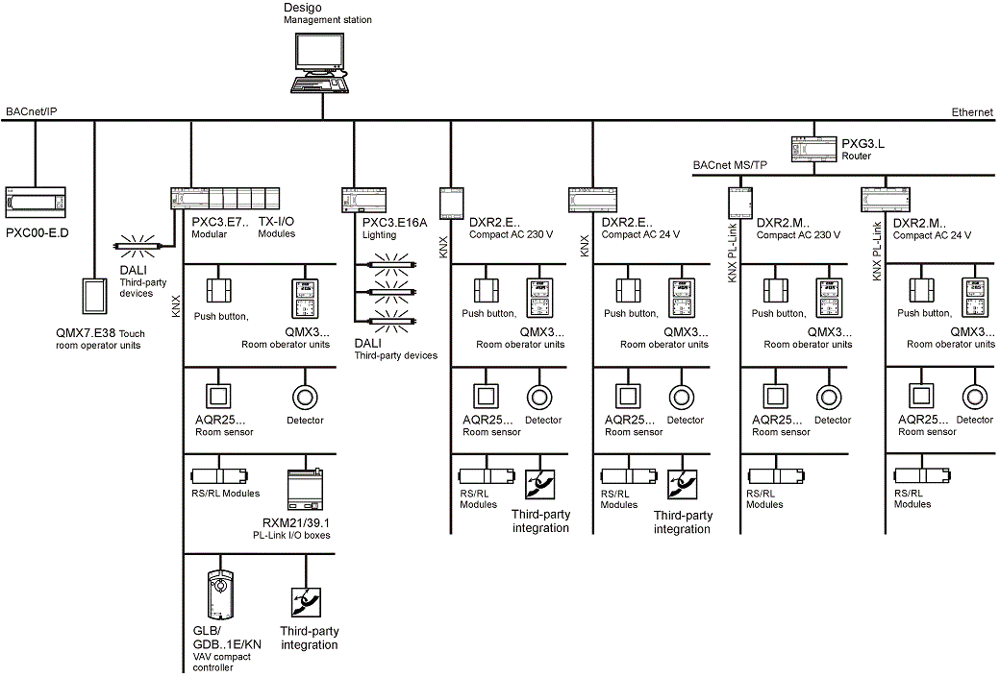

General
Desigo Building Automation and Control Topology

System Version Compatibility
The table below provides an overview on compatibility of the different versions.
Versions | ||
System version | Desigo System | PXC3 / PXC4 / PXC5 / PXC7 / DXR2 Automation Stations |
2.0 | V5.1 | V1.16 |
2.1 | V6 | V1.20 |
3.0 | V6.1 | V1.2x |
What are central functions?
Central control functions permit and support the centralized control and coordination of defined groups. Typical centralized control functions include:
- Central occupancy definition
- Central setpoints.
- Central hot water/chilled water coordination (Optimization of primary plants, supply chain optimization).
- Central lighting control.
- Central emergency lighting control
- Central blinds control.

Various source provide input for a central control function, including:
- Signals from an external system.
- Commands from a system operator.
- Commands from a building user.
- Signal from Desigo automation stations
- Commands from a scheduler program.
- Commands from superposed central control.
These signals and commands are evaluated by the central control function. The central control function sends the result via the group manager and group members to the subordinate control functions.
Terms Used
Term | Description |
Lighting | One or more luminaires in a room controlled by the local room operator unit or management platform. |
Emergency lighting | One or more luminaires in a room that are turned on during an emergency by the fire department or central function (BACnet priority 2). Local room operator units are overridden until the emergency has ended. |
Shading | General protection against the sun to reduce solar radiation into the building. |
HVAC application | Controls room climate based on entered operating modes Protection, Economy, Pre-Comfort or Comfort. The following states can be defined using an emergency function: Off, purge, negative or positive pressure. |
Blinds | Used in the document as the generic term for the following shading:
|
Moving walls | Used primarily in meeting and conference rooms to temporarily divide a large room into smaller rooms. An end switch automatically adapts the Desigo building automation and control application to the new room conditions. So that HVAC, lighting, and blinds follow the changed room requirements. |
Emergency lights (Emergency Light) | Safety luminaires that are continuous lit or during a power outage. Switched on automatically in the event of a fault or by the fire department or the management platform during an emergency. Has a separate power supply such as batteries, rechargeable batteries, or a system connected to uninterrupted power supply (UPS). Emergency luminaires can also be integrated in normal luminaires or used as independent emergency luminaires. |
Execution Order | Priority refers to BACnet priorities 1 to 16. |
Room | A room consists of at least one or more neighboring room segments. A room consists in the Desigo building automation and control application of a room set to Used and a room segment. In a room with multiple segments, the unused rooms (software) are set in the Desigo building automation and control application to Unused. |
Room segment | A room segment represents the smallest, indivisible unit. A room segment is defined and created one time. Room segments can be repeatedly compiled into new rooms throughout the building's life cycle. |